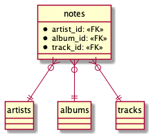
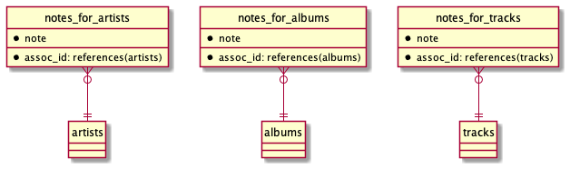
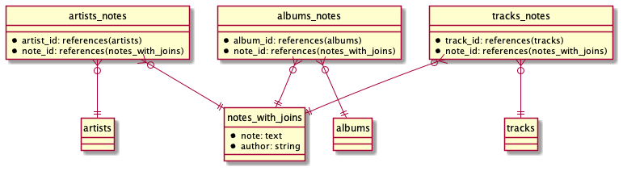

Ecto
Table of Contents
- 1. Ecto
- 1.1. Packages
- 1.2. Repository vs Active Record Pattern
- 1.3. Queries
- 1.4. Schemas
- 1.5. Subqueries
- 1.6. Aggregates
- 1.7. Associations
- 1.8. Changesets
- 1.9. Repo
- 1.10. Transactions
- 1.11. Migrations
- 1.12. Testing
- 1.13. Upserts
- 1.14. Bulk insert
- 1.15. Best practices
- 1.16. Embedded schemas
- 1.17. Schemas without tables
- 1.18. Performance
1 Ecto
1.1 Packages
| package | usage |
|---|---|
| ecto | core, which we can use without database |
| ectosql | needed when workig with relationtal databases |
When we need ecto_sql, we don’t have to explicitly require for ecto
package because it is a dependency on ecto_sql package.
1.2 Repository vs Active Record Pattern
Ecto uses Repository Pattern. Every operation that involves talking to
database has to go through Repo module.
Other ORM solutions often use Active Record Pattern. Operations are performed on in-memory data structures, and the necessary SQL commands are silently dispatched and sent to database completely behind the scenes.
1.3 Queries
1.3.1 Executing raw SQL
Repo.query("select * from artists where id=1")
1.3.2 Invoking specialized function
Your database might expose some specialized function that Ecto doesn’t support.
The fragment function gives you an escape hatch for writing bits of raw SQL
that get inserted verbatim into the query:
q = from a in "artists", where: fragment("lower(?)", a.name) == "miles davis", select: [:id, :name] Ecto.Adapters.SQL.to_sql(:all, Repo, q) #=> {"SELECT a0.\"id\", a0.\"name\" FROM \"artists\" AS a0 #=> WHERE (lower(a0.\"name\") = 'miles davis')", []}
1.3.3 Viewing generated SQL
Ecto.Adapters.SQL.to_sql(:all, Repo, query)
Repo.to_sql(:all, query)
1.3.4 Pin operator
We can use pin operator (^) to use expressions in queries:
q = from "artists", where: [name: ^artist_name], select: [:id, :name] q = from "artists", where: [name: ^("Bill" <> "Evans")], select: [:id, :name]
Any value added by pin operator become parametrized value. That way pin operator protects us from SQL injection.
1.3.5 Query binding
We can refer to table throughout query by using query binding:
q = from a in "artists", where: a.name == "Bill Evans", select: [:id, :name]
1.3.6 Composing queries
1.3.6.1 Breaking queries into smaller pieces
albums_by_miles = from a in "albums", join: ar in "artists", on: a.artist_id == ar.id, where: ar.name == "Miles Davis" album_query = from a in albums_by_miles, select: a.title miles_albums = Repo.all(album_query) track_query = from a in albums_by_miles, join: t in "tracks", on: a.id == t.album_id, select: t.title miles_tracks = Repo.all(track_query)
1.3.6.2 Order is preserved
If we have query like this
albums_by_miles = from a in "albums", join: ar in "artists", on: a.artist_id == ar.id, where: ar.name == "Miles Davis"
The important thing to remember is that when composing queries, binding order is preserved.
So, if we need to fetch artist name:
album_query = from [a,ar] in albums_by_miles, select: a.title
we need to do from [a, ar], even if we dont need a (albus), becuse binding
order is preserved
1.3.6.3 Named bindings
If your query contains joins across several tables, and you’re composing the query over a large section of code, named bindings can help simplify your query writing:
albums_by_miles = from a in "albums", as: :albums, join: ar in "artists", as: :artists, on: a.artist_id == ar.id, where: ar.name == "Miles Davis" album_query = from [albums: a] in albums_by_miles, select: a.title
1.3.6.4 Composing queries with functions
def by_artist(query, artist_name) do from a in query, join: ar in "artists", on: a.artist_id == ar.id, where: ar.name == ^artist_name end def with_tracks_longer_than(query, duration) do from a in query, join: t in "tracks", on: t.album_id == a.id, where: t.duration > ^duration, distinct: true end def title_only(query) do from a in query, select: a.title end q = "albums" |> by_artist("Miles Davis") |> with_tracks_longer_than(720) |> title_only
1.3.6.5 orwhere
If we want to get the albums that were either by Miles Davis or Bobby Hutcherson, we can do it like this:
q = from a in "albums", join: ar in "artists", on: a.artist_id == ar.id, where: ar.name == "Miles Davis" or ar.name == "Bobby Hutcherson", select: %{artist: ar.name, album: a.title}
But if want to or something that is already “packed” into a query, we use
or_where:
albums_by_miles = from a in "albums", join: ar in "artists", on: a.artist_id == ar.id, where: ar.name == "Miles Davis" q = from [a,ar] in albums_by_miles, or_where: ar.name == "Bobby Hutcherson", select: %{artist: ar.name, album: a.title}
1.3.7 Extending query API
If you have some piece of code that you’ll be using a lot, you can extend Ecto’s query API by adding your own macro:
defmacro lower(arg) do quote do: fragment("lower(?)", unquote(arg)) end
Then the query could be rewritten like this:
q = from a in "artists", where: lower(a.name) == "miles davis", select: [:id, :name]
1.3.8 Combining results
If you want to combine results from different queries, they need to have same column names and data type:
tracks_query = from t in "tracks", select: t.title union_query = from a in "albums", select: a.title, union: ^tracks_query Repo.all(union_query)
union will filter the results so that they only contain unique rows, and that
can be quite a bit of overhead on your database. If you don’t care about
uniqueness (or you’re certain that your results won’t contain duplicates), you
can use union_all instead.
1.3.9 Ordering with NULL’s
Ordering on columns that might contain NULL’s depend on database implementation: some put the NULL values first, others put them last. To control that, we can explicitly state what we want:
q = from t in "tracks", select: [t.album_id, t.title, t.index], order_by: [desc: t.album_id, asc_nulls_first: t.index]
1.3.10 Dynamic queries
In Ecto, all constructs, from select and order_by to where and group_by, accept
data structures as input.
This is useful when we need to build dynamic queries based on some UI filters:
def filter(params) do Post # 1. Add named join binding |> join(:inner, [p], assoc(p, :authors), as: :authors) |> order_by(^filter_order_by(params["order_by"])) |> where(^filter_where(params)) end # 2. Returned dynamic with join binding def filter_order_by("published_at_desc"), do: [desc: dynamic([p], p.published_at)] def filter_order_by("published_at"), do: dynamic([p], p.published_at) def filter_order_by("author_name_desc"), do: [desc: dynamic([authors: a], a.name)] def filter_order_by("author_name"), do: dynamic([authors: a], a.name) def filter_order_by(_), do: [] # 3. Change the authors clause inside reduce def filter_where(params) do Enum.reduce(params, dynamic(true), fn {"author", value}, dynamic -> dynamic([authors: a], ^dynamic and a.name == ^value) {"category", value}, dynamic -> dynamic([p], ^dynamic and p.category == ^value) {"published_at", value}, dynamic -> dynamic([p], ^dynamic and p.published_at > ^value) {_, _}, dynamic -> # Not a where parameter dynamic end) end
NOTE: when you reread this, read this also. More about this here. dynamic queries example
1.4 Schemas
1.4.1 :map type
The :map type allows you to store Elixir maps into the database. The storage
strategy differs depending on the database. In MySQL, maps are stored as text
fields, but Postgres has first-class support for maps via its jsonb type and
these fields are actually queryable. As of this writing, the Ecto team strongly
recommends that your maps use string keys, rather than atoms. In some cases,
storing a map with atom keys will work correctly but when retrieving, Ecto will
always return maps with string keys.
1.4.2 When to not use schema
If we write queries used in reports, where we often need fields from many
different tables, combined with aggregate functions like count and avg.
These don’t return data in shapes we’re likely to re-use.
1.4.3 Inserting with schemas
Repo.insert(%Artist{name: "John Coltrane"})
1.4.4 Deleting with schemas
track = Repo.get_by(Track, title: "The Moontrane") Repo.delete(track)
1.5 Subqueries
1.5.1 Subquerying whole table
inner_query = from MyApp.Post, order_by: [desc: :visits], limit: 10 query = from q in subquery(inner_query), select: avg(q.visits) MyApp.Repo.one(query)
1.5.2 Subquerying a fields
To retrieve the name of every book alongside the name of the last person the library has lent it to. To do so, we need to find the last lending ID of every book, and then join on the book and visitor tables.
last_lendings = from l in Lending, group_by: l.book_id, select: %{ book_id: l.book_id, last_lending_id: max(l.id) } from l in Lending, join: last in subquery(last_lendings), on: last.last_lending_id == l.id, join: b in assoc(l, :book), join: v in assoc(l, :visitor), select: {b.name, v.name}
1.6 Aggregates
If you want to calculate average of first 10 top row, you cannot do something like this:
MyApp.Repo.one( from p in MyApp.Post, order_by: [desc: :visits], limit: 10, select: avg(p.visits) )
This will return average of all rows, and then limit would be applied.
This will work:
query = from MyApp.Post, order_by: [desc: :visits], limit: 10 MyApp.Repo.aggregate(query, :avg, :visits)
When limit, offset or distinct is specified in the query, aggregate/4
automatically wraps the given query in a subquery.
It will work as if we have written:
inner_query = from MyApp.Post, order_by: [desc: :visits], limit: 10 query = from q in subquery(inner_query), select: avg(q.visits) MyApp.Repo.one(query)
1.7 Associations
1.7.1 1:n
defmodule MusicDB.Album do use Ecto.Schema schema "albums" do field :title, :string field :release_date, :date has_many :tracks, MusicDB.Track end end
1.7.2 1:1
defmodule MusicDB.Album do use Ecto.Schema schema "albums" do field :title, :string field :release_date, :date has_one :tracks, MusicDB.Track end end
1.7.3 n:n
# in album.ex schema "albums" do # field definitions here... many_to_many :genres, MusicDB.Genre, join_through: MusicDB.AlbumGenre end # in genre.ex schema "genres" do # field definitions here... many_to_many :albums, MusicDB.Album, join_through: MusicDB.AlbumGenre end # in album_genre.ex schema "albums_genres" do # field definitions here... belongs_to :albums, MusicDB.Album belongs_to :genres, MusicDB.Genre end
We can even tighten this up.If we’re only going have to have album_id and
genre_id fields in the albums_genres table, we don’t need to create a schema for
that table to make the many-to-many association work. We just need to create the
table, then refer to the table name in the join_through option, like so:
# in album.ex schema "albums" do many_to_many :genres, MusicDB.Genre, join_through: "albums_genres" end # in genre.ex schema "genres" do many_to_many :albums, MusicDB.Album, join_through: "albums_genres" end
1.7.4 Nested associations
Let’s say we have schema like this:
+------+ +------+ +------+ |artist|1 - n|albums|1 - n|tracks| +------+ +------+ +------+
If we want to reach all tracks for artist, we can do it like this:
schema "artists" do # field definitions here... has_many :albums, MusicDB.Album has_many :tracks, through: [:albums, :tracks] end
But this nesting works only for has_many and has_one. We cannot use it on
belongs_to to reach from tracks to artist directly.
1.7.5 Lazy loading is not supported
If you have following association:
defmodule MusicDB.Album do use Ecto.Schema schema "albums" do field :title, :string field :release_date, :date has_many :tracks, MusicDB.Track end end
And if you try to do this:
album = Repo.get_by(Album, title: "Kind Of Blue") album.tracks
you’ll get a message (not an error) #Ecto.Association.NotLoaded<association
:tracks is not loaded>. That’s because Ecto will not contact database when you
do album.tracks and load tracks (remember, it uses Repository Pattern). That
way it prevents N+1 query problem (one to fetch parent records, and N to
fetch children).
But of course you can preload everything you need:
albums = Repo.all(from a in Album, preload: :tracks) # or using nested association Repo.all(from a in Artist, preload: [albums: :tracks])
Or if you already have some preloaded parent records:
albums = Album |> Repo.all |> Repo.preload(:tracks)
In both cases, no matter how many albums are there, there are gonna be only 2 queries:
- one to fetch all the albums
- one to fetch all the tracks
1.7.6 Accessing associations
1.7.6.1 Prepopulate fields in query
Repo.all from p in Post, preload: [:comments]
1.7.6.2 Using joins
This will produce single SQL query:
Repo.all from p in Post, join: c in assoc(p, :comments), where: c.votes > p.votes, preload: [comments: c]
1.7.6.3 Preloading for already loaded parent record
posts = Repo.all(Post) |> Repo.preload(:comments)
1.7.6.4 Getting only associated records
# Get all comments for the given post Repo.all assoc(post, :comments) # Get all authors of all comments for the given post Repo.all Ecto.assoc(posts, [:comments, :author]) # Or build a query on top of the associated comments query = from c in assoc(post, :comments), where: not is_nil(c.title)
1.7.7 Creating associations
1.7.7.1 Using build_assoc
comment = Ecto.build_assoc(post, :comments, body: "Excellent!")
is equivalent to
%Comment{post_id: post.id, body: "Excellent!"}
1.7.8 Deleting records with associations
We specify what should happen with child records when parent is deleted with
on_delete option. Available options are:
:nothing- nothing happens with children (default):nilify_all- setting foreign key tonull:delete_all- deletes all children
But many databases allow you to specify this behavior in the database itself. In
that case, the work of deleting or nilifying the child records is handled by the
database (and setting on_delete option has no effect).
1.7.9 Inserting parent and children at the same time
You don’t have to create a parent first, and then it’s children. You can do it in a single step, like this:
Repo.insert( %Artist{ name: "John Coltrane", albums: [ %Album{ title: "A Love Supreme", tracks: [ %Track{title: "Part 1: Acknowledgement", index: 1}, %Track{title: "Part 2: Resolution", index: 2}, %Track{title: "Part 3: Pursuance", index: 3}, %Track{title: "Part 4: Psalm", index: 4}, ], genres: [ %Genre{name: "spiritual jazz"}, ] } ] } )
That’s great when you’re writing seed scripts.
1.7.10 Polymorphic associations
This special type of association allows a single record type to have a “belongs to” relationship with more than one type of record.
For e.g. we could have notes table that we use to store notes for albums,
tracks or artists. notes hence needs to be associated with albums, tracks
and artists table at the same time.
There are 3 approaches to make polymorphic associations in Ecto.
1.7.10.0.1 Approach #1: Multiple foreign keys
This is recommended way if we don’t have big number of associations.

# migration create table(:notes_with_fk_fields) do add :note, :text, null: false add :author, :string, null: false add :artist_id, references(:artists) add :album_id, references(:albums) add :track_id, references(:tracks) timestamps() end #schema schema "notes_with_fk_fields" do field(:note, :string) field(:author, :string) timestamps() belongs_to(:artist, MusicDB.Artist) belongs_to(:album, MusicDB.Album) belongs_to(:track, MusicDB.Track) end # on each Artist, Album and Track schemas has_many :notes, MusicDB.Note # Using it artist = Repo.get_by(Artist, name: "Bobby Hutcherson") note = Ecto.build_assoc(artist, :notes, note: "My fave vibes player", author: "darin") Repo.insert!(note)
Pros:
- easy to understand
- recommended way
Cons:
- needs all foreign keys for every association
- have to manage constraints smartly (like we shouldn’t allow more than one FK value etc)
To ensure that only one FK can be set:
# migration fk_check = """ (CASE WHEN artist_id IS NULL THEN 0 ELSE 1 END) + (CASE WHEN album_id IS NULL THEN 0 ELSE 1 END) + (CASE WHEN track_id IS NULL THEN 0 ELSE 1 END) = 1 """ create constraint(:notes_with_fk_fields, :only_one_fk, check: fk_check)
1.7.10.0.2 Approach #2: Using abstract schema

We create separate notes tables for each association.
All tables have the same column names. This allows us to create a single schema struct.
# migration create table(:notes_for_artists) do add :note, :text, null: false add :author, :string, null: false add :assoc_id, references(:artists) timestamps() end create table(:notes_for_albums) do add :note, :text, null: false add :author, :string, null: false add :assoc_id, references(:albums) timestamps() end create table(:notes_for_tracks) do add :note, :text, null: false add :author, :string, null: false add :assoc_id, references(:tracks) timestamps() end # schema # notice that we don't have schema name (we could write anything here) schema "abstract table: notes" do field :note, :string field :author, :string field :assoc_id, :integer timestamps() end # artist schema has_many :notes, {"notes_for_artists", MusicDB.Note}, foreign_key: :assoc_id
Pros:
- No unused columns
Cons:
- columns for note have to be repeated in each of the association tables
- you cannot create a note on it’s own: you always have to associate it to parent
1.7.10.0.3 Approach #3: Using manytomany

# migration create table(:notes_with_joins) do add :note, :text, null: false add :author, :string, null: false timestamps() end create table(:artists_notes) do add :artist_id, references(:artists) add :note_id, references(:notes_with_joins) end create index(:artists_notes, :artist_id) create index(:artists_notes, :note_id) create table(:albums_notes) do add :album_id, references(:albums) add :note_id, references(:notes_with_joins) end create index(:albums_notes, :album_id) create index(:albums_notes, :note_id) create table(:tracks_notes) do add :track_id, references(:tracks) add :note_id, references(:notes_with_joins) end create index(:tracks_notes, :track_id) create index(:tracks_notes, :note_id) # schema schema "notes_with_joins" do field :note, :string field :author, :string many_to_many :artists, MusicDB.Artist, join_through: "artists_notes" many_to_many :albums, MusicDB.Album, join_through: "albums_notes" many_to_many :tracks, MusicDB.Track, join_through: "tracks_notes" timestamps() end # lib/music_db/artist.ex many_to_many :notes, MusicDB.Note, join_through: "artists_notes" # lib/music_db/album.ex many_to_many :notes, MusicDB.Note, join_through: "albums_notes" # lib/music_db/track.ex many_to_many :notes, MusicDB.Note, join_through: "tracks_notes" # Adding record album = Repo.get_by(Album, title: "Kind Of Blue") note = Repo.insert!(%Note{note: "Love this album!", author: "darin"}) album |> Repo.preload(:notes) |> Ecto.Changeset.change() |> Ecto.Changeset.put_assoc(:notes, [note]) |> Repo.update!
Pros:
- we get the benefit of having the association defined in separate tables, but we only need one notes table so we don’t have to worry about duplicating our column definitions across several different tables.
Cons:
- since we’re using
many_to_manyit’s possible to associate a note with more records, and that’s logical error. So we have to be careful.
1.8 Changesets
1.8.1 Distinct stages
Changesets manage the update process by breaking it into three distinct stages:
- casting and filtering user input
- validating the input
- sending the input to the database and capturing result
1.8.1.1 Casting and filtering
Here we perform casting (like turning a string into an integer), and we filter out any values we don’t want to use.
You can perform casting and filtering in two ways, depending on where input is coming from.
1.8.1.1.1 Input coming from inside
If the data is internal to the application (that is, you’re generating the data yourself in your application code), you can create a changeset:
# First we create a changeset for a new record changeset = change(%Artist{name: "Charlie Parker"}) # Or we create a changeset for an existing record artist = Repo.get_by(Artist, name: "Bobby Hutcherson") changeset = change(artist) # We can say what's changing at the moment of changeset creation artist = Repo.get_by(Artist, name: "Bobby Hutcherson") changeset = change(artist, name: "Robert Hutcherson") # And we can concatenate changesets changeset = change(changeset, birth_date: ~D[1941-01-27]) # And we can see what's gonna be changed changeset.changes #=> %{name: "Robert Hutcherson"}
1.8.1.1.2 Input coming from outside
If input is coming from outside (like from web form), we use cast function:
# values provided by the user params = %{ "name" => "Charlie Parker", "birth_date" => "1920-08-29", "instrument" => "alto sax"} changeset = cast(%Artist{}, params, [:name, :birth_date]) changeset.changes #=> %{birth_date: ~D[1920-08-29], name: "Charlie Parker"}
Sometimes we want to treat some values as NULL(for example, when working with spreadsheets, you’ll often get “NULL” value):
params = %{"name" => "Charlie Parker", "birth_date" => "NULL"} changeset = cast( %Artist{}, params, [:name, :birth_date], empty_values: ["", "NULL"] ) changeset.changes #=> %{name: "Charlie Parker"}
1.8.1.2 Validating the input
1.8.1.2.1 Validations
Validations are run immediately when called, and the returned changeset will reflect the result of the validation.
If one validation fails, Ecto will still run the others, and the errors field will show all of the errors grouped together:
params = %{"name" => "x"} changeset = %Artist{} |> cast(params, [:name, :birth_date]) |> validate_required([:name, :birth_date]) |> validate_length(:name, min: 3) changeset.errors #=> [name: {"should be at least %{count} character(s)", #=> [count: 3, validation: :length, min: 3]}, #=> birth_date: {"can't be blank", [validation: :required]}]
You can also turn errors in map form:
traverse_errors(changeset, fn {msg, opts} -> Enum.reduce(opts, msg, fn {key, value}, acc -> String.replace(acc, "%{#{key}}", to_string(value)) end) end) #=> %{birth_date: ["can't be blank"], #=> name: ["should be at least 3 character(s)"]}
params = %{"name" => "Thelonius Monk", "birth_date" => "2117-10-10"} changeset = %Artist{} |> cast(params, [:name, :birth_date]) |> validate_change(:birth_date, fn :birth_date, birth_date -> cond do is_nil(birth_date) -> [] Date.compare(birth_date, Date.utc_today()) == :lt -> [] true -> [birth_date: "must be in the past"] end end) changeset.errors #=> [birth_date: {"must be in the past", []}]
validate_change is an all-purpose validator that allows you to perform any
sort of validation you might need. The downside is that you can end up with a
lot of nested code within your pipeline.
Creating a custom validation function improves readability and also allows you to reuse your validation in multiple changesets. Custom functions work best if they can be piped along with Ecto’s validation functions, so it’s best to follow the same format:
def validate_in_the_past(changeset, field) do validate_change(changeset, field, fn _field, value -> cond do is_nil(value) -> [] Date.compare(value, Date.utc_today()) == :lt -> [] true -> [{field, "must be in the past"}] end end) end params = %{"name" => "Thelonius Monk", "birth_date" => "2117-10-10"} changeset = %Artist{} |> cast(params, [:name, :birth_date]) |> validate_required(:name) |> validate_in_the_past(:birth_date)
1.8.1.2.2 Constraints
They work almost like validation, but they are enforced by the database. Important thing to notice is that constraints checking is performed only when we talk to database (because constraints are enforced by the database):
Repo.insert!(%Genre{ name: "bebop" }) params = %{"name" => "bebop"} changeset = %Genre{} |> cast(params, [:name]) |> validate_required(:name) |> validate_length(:name, min: 3) |> unique_constraint(:name) # Still no errors. changeset.errors #=> [] # Only when we talk to database, we'll get errors case Repo.insert(changeset) do {:ok, _genre} -> IO.puts "Success!" {:error, changeset} -> IO.inspect changeset.errors end #=> [name: {"has already been taken", []}]
Here are some rules:
- validations will be performed all together, so you always get everything that is wrong
- if validations have failed, constraints are not performed (why even bother with calling database if input is invalid)
- if any constraint fails, other constraint checks are not performed
Sometimes you want to perform constraints check when doing validation. For e.g.
you don’t want to wait that your registration form is valid, and then find out
that username is taken (unique_constraint). In that case, you can use
unsafe_validation_unique function. It checks the database to see if the value
already exists, but it’s evaluated along with the rest of the validations, so
the user will see all of the validation errors together. Whn using
unsafe_validation_unique, you still have to use unique_constraint.
1.8.2 Usual way of inserting/updating with changesets
params = %{name: "Gene Harris"} changeset = %Artist{} |> cast(params, [:name]) |> validate_required([:name]) case Repo.insert(changeset) do {:ok, artist} -> IO.puts("Record for #{artist.name} was created.") {:error, changeset} -> IO.inspect(changeset.errors) end
We pipe the changeset through a series of validation functions then immediately
hand the changeset off to the Repo without checking the valid? field of the
changeset. This is safe to do: if Repo sees that the changeset has validation
errors, it won’t send anything to the database. It will return :error along
with the changeset, as seen in the second half of the preceding case
statement.
1.8.3 Using changesets without schemas
You don’t have to use schemas to work with changesets. You can use simple maps:
form = %{artist_name: :string, album_title: :string, artist_birth_date: :date, album_release_date: :date, genre: :string} # user data - they only provided one value params = %{"artist_name" => "Ella Fitzgerald", "album_title" => "", "artist_birth_date" => "", "album_release_date" => "", "genre" => ""} changeset = {%{}, form} |> cast(params, Map.keys(form)) |> validate_in_the_past(:artist_birth_date) |> validate_in_the_past(:album_release_date) if changeset.valid? do # execute the advanced search else # show changeset.errors to the user end
This example shows that you can use Ecto.Changeset for casting and validating
data even if you’re not working with database.
1.8.4 Working with associations
1.8.4.1 Adding single associated record
artist = Repo.get_by(Artist, name: "Miles Davis") album = Ecto.build_assoc(artist, :albums, title: "Miles Ahead") Repo.insert(album) #=> {:ok, %MusicDB.Album{id: 6, title: "Miles Ahead", artist_id: 1, ...}
1.8.4.2 Updating all associated records (with internal data)
Repo.get_by(Artist, name: "Miles Davis") |> Repo.preload(:albums) |> change |> put_assoc(:albums, [%Album{title: "Miles Ahead"}]) |> Repo.update(changeset)
This code will replace old album records with new ones. What should happen with
old records is defined in functions for adding associations to schemas
(has_many, belongs_to, etc), and it could be:
- raising an error if we try to replace old records
- report it as changeset’s errors during validation
- set
NULLto foreign key for all old associated records - update old records with new values (can be applied to only
has_oneandbelongs_to) - delete all old records
1.8.4.3 Updating all associated records (with external data)
# Get 2 albums to edit portrait = Repo.get_by(Album, title: "Portrait In Jazz") kind_of_blue = Repo.get_by(Album, title: "Kind Of Blue") # Make params params = %{"albums" => [ # insert, because there's no ID %{"title" => "Explorations"}, # update, because there's ID and it belongs to parent %{"title" => "Portrait In Jazz (remastered)", "id" => portrait.id}, # insert, because there's ID, but it doesn't belong to parent %{"title" => "Kind Of Blue", "id" => kind_of_blue.id} ] } Repo.get_by(Artist, name: "Bill Evans") |> Repo.preload(:albums) |> cast(params, []) |> cast_assoc(:albums) |> Repo.update
Since this operation operates on all associated records, all other associated
albums (which are not in params) will be acted upon based on on_replace rule.
1.8.4.4 Adding parent and associated record (with external data)
params = %{"name" => "Esperanza Spalding", "albums" => [%{"title" => "Junjo"}]} changeset = %Artist{} |> cast(params, [:name]) |> cast_assoc(:albums)
In this case, album must have changeset:
# album.ex def changeset(album, params) do album |> cast(params, [:title]) |> validate_required([:title]) end
If you want to use another fn name for changeset:
changeset = %Artist{} |> cast(params, [:name]) |> cast_assoc(:albums, with: &SomeModule.some_fn/2)
1.8.4.5 Tips for working with associations
- If working with individual records, just use
build_assoc. - If you want to manage all associated records at once
- If data is coming from “outside”, use
cast_assoc - If data is coming from “inside”, use
put_assoc
- If data is coming from “outside”, use
- If you want to first manage child records, and then associate them with parent
- First create child records
- Then use
put_assocto relate child records to parent
1.9 Repo
1.9.1 Extending Repo module
If you find yourself calling some particular Repo functions over and over with the same set of options, you can add customized behavior to it by adding more functions:
# repo.ex def count(table) do aggregate(table, :count, :id) end
And now we can use it:
Repo.count("albums")
1.10 Transactions
1.10.1 With functions
artist = %Artist{name: "Johnny Hodges"} Repo.transaction(fn -> Repo.insert!(artist) Repo.insert!(Log.changeset_for_insert(artist)) end)
Couple of drawbacks:
- We have to use functions that throw exceptions (
insert!) to be able to rollback. - anonymous functions are not composable
- We don’t have good visibility into exactly what went wrong when a transaction fails.
If we want to know exactly where the problem was:
cs = Ecto.Changeset.change(%Artist{name: nil}) |> Ecto.Changeset.validate_required([:name]) Repo.transaction(fn -> case Repo.insert(cs) do {:ok, _artist} -> IO.puts("Artist insert succeeded") {:error, _value} -> Repo.rollback("Artist insert failed") end case Repo.insert(Log.changeset_for_insert(cs)) do {:ok, _log} -> IO.puts("Log insert succeeded") {:error, _value} -> Repo.rollback("Log insert failed") end end)
1.10.2 With Ecto.Multi
alias Ecto.Multi artist = %Artist{name: "Johnny Hodges"} multi = Multi.new |> Multi.insert(:artist, artist) |> Multi.insert(:log, Log.changeset_for_insert(artist)) Repo.transaction(multi) Repo.transaction(multi) # Now we talk to database
Each operation within transaction has unique name (:artist, :log).
It’s recommended to always use changesets, because they can catch all errors before hitting database. If changesets are not used, it’s possible that our database will throw an exception, and that exception will bubble up:
multi = Multi.new |> Multi.insert(:artist, %Artist{}) Repo.transaction(multi) #=> ** (Postgrex.Error) ERROR 23502 (not_null_violation): null value #=> in column "name" violates not-null constraint
We can also run any code inside transaction:
artist = %Artist{name: "Toshiko Akiyoshi"} multi = Multi.new() |> Multi.insert(:artist, artist) |> Multi.insert(:log, Log.changeset_for_insert(artist)) |> Multi.run(:search, fn _repo, changes -> SearchEngine.update(changes[:artist]) end) Repo.transaction(multi)
1.11 Migrations
1.11.1 Good practice
When developing new migrations, it’s a good idea to make sure you can roll them back. Part of testing a migration is making sure it runs and rolls back successfully, always leaving the database in a stable state. You don’t want to be trying this out for the first time while you’re dealing with a production emergency.
1.11.2 Order of execution
When running migrations, Ecto creates a queue of operations that it sends to the database all at once. That could lead to errors (like tables are not created, and migration is trying to fill it with some data).
The flush function tells Ecto to execute the currently queued operations—any
code that comes after the flush call can assume that all the prior changes have
been run:
def change do #... create(index("compositions_artists", :composition_id)) create(index("compositions_artists", :artist_id)) flush() from(c in "compositions", select: [:id, :artist_id]) |> Repo.all() #... end
1.11.3 Globally changing date type
config :music_db, MusicDB.Repo, migration_timestamps: [type: :utc_datetime]
1.12 Testing
1.12.1 Sandboxes
Sandboxes allow you to run your database tests concurrently, while still keeping the database state of each test isolated from the others. The secret sauce underlying this feature is a special pool of database connections with an ownership mechanism that allows you to control how connections are used and shared between processes. Using the sandbox can significantly reduce the time it takes to run your test suite, so you should take advantage of this feature when you can.
1.12.2 Ownership mode
Ownership mode defines how processes are gonna share (or not) connection.
1.12.2.1 :auto mode
Each database operation gets it’s own connection. So if you do something like:
Repo.insert!(...) Repo.get!(...)
Repo.get!() might get different connection.
1.12.2.2 :manual mode
If you need to share same connection during test, you use :manual mode.
1.12.2.3 :shared mode
If you have code that’s spawning it’s own processes, you need to use :shared mode.
But since here we share connection between different processes, we cannot run
tests concurrently (by using use ExUnit.Case, async: true).
To allow some concurrency in our tests, we can share connections with allowances
1.12.3 Example of testing changeset
You don’t have to test if data is stored in database. That way you’re testing also Ecto’s code, which doesn’t need to be teseted again. Instead you should test your changeset only:
test "valid changeset without insert" do params = %{"title" => "Dark Side of the Moon"} changeset = Album.changeset(%Album{}, params) album = Ecto.Changeset.apply_changes(changeset) assert album.title == "Dark Side of the Moon" end
1.13 Upserts
1.13.1 What is upsert
The term upsert is a mash-up of “update or insert” and refers to a single operation that either updates an existing record with new data, or inserts a new record if it doesn’t already exist. To do this, upserts rely on a column with a unique index, either the primary key or some other value guaranteed to be unique. When upserting a record, the system checks to see if a record with a matching unique value exists. If it does, it updates the current record; if not, it inserts a new one. This all happens atomically at the database level, avoiding potential race conditions.
1.13.2 Example with conflict_target
Calling this code:
Repo.insert(genre, on_conflict: [set: [wiki_tag: "Funk_music"]], conflict_target: :name)
will perform upsert, but return value will not reflect that change. Workaround is:
genre = %Genre{name: "funk", wiki_tag: "Funky_stuff"} Repo.insert(genre, on_conflict: :replace_all_except_primary_key, conflict_target: :name)
1.13.3 All at once
If we want to perform just 2 queries - one for insetring all associated tags, and one for inserting tag:
defmodule MyApp.Post do use Ecto.Schema import Ecto.Query schema "posts" do add :title add :body many_to_many :tags, MyApp.Tag, join_through: "posts_tags", on_replace: :delete timestamps() end def changeset(struct, params \\ %{}) do struct |> Ecto.Changeset.cast(params, [:title, :body]) |> Ecto.Changeset.put_assoc(:tags, parse_tags(params)) end defp parse_tags(params) do (params["tags"] || "") |> String.split(",") |> Enum.map(&String.trim/1) |> Enum.reject(& &1 == "") |> insert_and_get_all() end defp insert_and_get_all([]) do [] end defp insert_and_get_all(names) do timestamp = NaiveDateTime.utc_now() |> NaiveDateTime.truncate(:second) maps = Enum.map(names, &%{ name: &1, inserted_at: timestamp, updated_at: timestamp }) Repo.insert_all MyApp.Tag, maps, on_conflict: :nothing Repo.all from t in MyApp.Tag, where: t.name in ^names end end
1.14 Bulk insert
filter_out_individual_entities(entity_ids) |> Enum.with_index() |> Enum.reduce(Multi.new(), fn {entity_id, idx}, multi -> signatory_changeset = Signatory.changeset(%Signatory{entity_id: entity_id}, %{user_id: user_id}) Multi.insert(multi, {:signatory, idx}, signatory_changeset, on_conflict: :nothing) end) |> Repo.transaction()
1.15 Best practices
1.15.1 Test only changesets
We shouldn’t write tests like this:
test "valid changeset" do params = %{"title" => "Dark Side of the Moon"} changeset = Album.changeset(%Album{}, params) album = Repo.insert!(changeset) assert album.title == "Dark Side of the Moon" end
Instead we should only test changesets:
test "valid changeset without insert" do params = %{"title" => "Dark Side of the Moon"} changeset = Album.changeset(%Album{}, params) album = Ecto.Changeset.apply_changes(changeset) assert album.title == "Dark Side of the Moon" end
1.15.2 Impure vs Pure
We should put all impure code (that uses Repo) into context module, and all pure code (manipulations of changesets, queries etc) into schema modules that live in the context’s namespace.
Context:
# lib/music_db/music.ex defmodule MusicDB.Music do alias MusicDB.Music.{Repo, Album, Artist} def get_artist(name) do MusicDB.Repo.get_by(Artist, name: name) end def all_albums_by_artist(artist) do Ecto.assoc(artist, :albums) |> MusicDB.Repo.all() end def search_albums(string) do string |> Album.search() |> MusicDB.Repo.all() end end
Schema modules:
# lib/music_db/music/artist.ex defmodule MusicDB.Music.Artist do use Ecto.Schema schema "artists" do field :name, :string has_many :albums, MusicDB.Music.Album end end # lib/music_db/music/album.ex defmodule MusicDB.Music.Album do use Ecto.Schema import Ecto.Query alias MusicDB.Music.{Album, Artist} schema "albums" do field :title, :string belongs_to :artist, Artist end def search(string) do from album in Album, where: ilike(album.title, ^"%#{string}%") end end
1.16 Embedded schemas
1.16.1 Declaring schemas
Embedded schemas are stored on the same record as the parent schema (like JSON column).
# lib/music_db/track_embed.ex defmodule MusicDB.TrackEmbed do import Ecto.Changeset use Ecto.Schema embedded_schema do field(:title, :string) field(:duration, :integer) end end # lib/music_db/album_with_embeds.ex defmodule MusicDB.AlbumWithEmbeds do use Ecto.Schema alias MusicDB.{ArtistEmbed, TrackEmbed} schema "albums_with_embeds" do field :title, :string embeds_many :tracks, TrackEmbed, on_replace: :delete end end
We can also put embeds inside other embeds.
When we’re getting some records, we don’t have to call preload to populate
embeds: they will be populated automatically since they are practically same
database record as parent record.
1.16.2 Making changes
1.16.2.1 With internal data
album = Repo.get_by(AlbumWithEmbeds, title: "Moanin'") changeset = change(album) changeset = put_embed(changeset, :artist, %{name: "Arthur Blakey"}) changeset = put_embed(changeset, :tracks, [%TrackEmbed{title: "Moanin'"}])
1.16.2.2 With external data
album = Repo.get_by(AlbumWithEmbeds, title: "Moanin'") params = %{ "artist" => %{"name" => "Arthur Blakey"}, "tracks" => [%{"title" => "Moanin'"}] } changeset = cast(album, params, []) changeset = cast_embed(changeset, :artist) changeset = cast_embed(changeset, :tracks)
1.17 Schemas without tables
We usually need schemas that are not backed by databases to adopt to UI.
For building such schemas we use embedded_schema macro:
# solo_artist.ex defmodule MusicDB.SoloArtist do use Ecto.Schema import Ecto.Changeset embedded_schema do field :name1, :string field :name2, :string field :name3, :string field :birth_date, :date field :death_date, :date end def changeset(solo_artist, params) do solo_artist |> cast(params, [:name1, :name2, :name3, :birth_date, :death_date]) |> validate_required([:name1, :birth_date]) end end
Then we can add code that will convert to schema that is backed by table:
# solo_artist.ex def to_artist(solo_artist) do name = "#{solo_artist.name1} #{solo_artist.name2} #{solo_artist.name3}" |> String.trim() %{name: name, birth_date: solo_artist.birth_date, death_date: solo_artist.death_date} end
1.18 Performance
1.18.1 Macros
By using macros for its query API, Ecto can compile your queries when your application is compiled. This reduces runtime processing, and allows Ecto to catch query errors early on. Ecto also maintains a cache of prepared queries, greatly reducing the number of times the query has to be prepared and planned by Ecto and the database.
1.18.2 Streams
We could use streams if we need to export data from db like this:
stream = Artist |> Repo.stream() |> Task.async_stream(fn artist -> save_artist_record(artist) end) Repo.transaction(fn -> Stream.run(stream) end)
1.18.3 Optimizing for latency
In this optimization, we want to have less round trips to database. And that we can accomplish by doing joins like this:
from a in Album, join: t in assoc(a, :tracks), join: ar in assoc(a, :artist), preload: [tracks: t, artist: ar]
1.18.4 Optimizing for bandwidth
If we want to avoid sending too much data over wire (which we did in Optimizing for latency), we could make joins perform mulitple round trips to database:
# Preload with atoms or keyword from a in Album, preload: [:tracks] # Preload with anonymous functions track_fun = fn album_ids -> Repo.all(from(t in Track, where: t.album_id in ^album_ids)) end Repo.all(from(a in Album, preload: [tracks: ^track_fun])) # Using Repo.preload albums = Repo.all(Album) Repo.preload(albums, [:tracks])